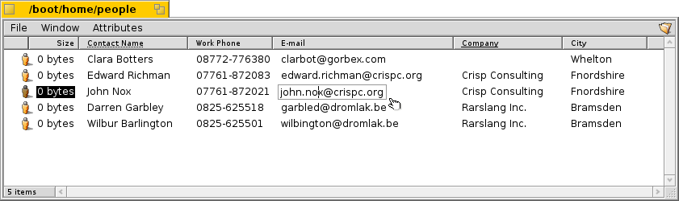

File Attributes
Attributes are data fields that belong to a file but aren't part of that file, e.g. they are not computed into the file size and can be copied or changed without touching the file itself. The system uses these attributes to store e.g. file size, file type or date of the last modification. This is similar to other operating systems and their filesystems.
What's different is that you can add any kind of attribute to any file and display it or make it editable in a Tracker window. You just have to define the kind of attribute you want to add to a file type (e.g. string, integer or time) and give it a name and description.
The file itself doesn't even need any contents at all. Take a look at these People files for example:
As you can see, these are all 0-sized files with attached attributes, the E-mail attribute of "John Nox" being edited right in Tracker.
If you index these attributes, as People, Email or audio files are by default, they are also searchable with Haiku's fast query system.
Attributes in Tracker
Attributes are displayed quite similar to a database or spreadsheet. Using Tracker you can choose which attributes to display (columns) and sort file listings (rows) accordingly.
To do this, open a Tracker window, click on the Attributes menu, and select the attributes you want to display. Alternatively, simply right-click onto a column heading and mark the items in the context menu. You can rearrange the columns by a simple drag&drop of the column heading. Moving a column out of a window, is a fast way to get rid of columns you don't need.
Double-click on the line between two attributes in the heading to automatically resize a column to its optimal width.
Click on a column heading to toggle the sorting order from ascending to descending. You can establish a secondary sort order by pressing the SHIFT key while clicking on a column heading. Doing that you can, for example, sort your People files by company and within that order sort by contact name. See the above screenshot as an example. The secondary sort order is marked by a dotted line under the heading.
Editing these attributes is as simple as renaming a file: Either click on an entry or press ALT+E and move between the attibutes with TAB and SHIFT+TAB. ESC leaves the editing mode without applying the changes.
Attributes in Terminal
If you prefer to use the commandline or plan to work with many files using scripting, there are several commands for controlling attributes from Terminal:
- listattr - lists a file's attributes, but doesn't show the contents of the attributes.
usage: listattr 'filename' ['filename' ...]
From our screenshot example above:
55 ~/people ->listattr Clara\ Botters File: Clara Botters Type Size Name ----------- --------- ------------------------------- MIME String 21 "BEOS:TYPE" Text 14 "META:name" Text 6 "META:nickname" Text 1 "META:company" Text 18 "META:address" Text 8 "META:city" Text 1 "META:state" Text 1 "META:zip" Text 1 "META:country" Text 1 "META:hphone" Text 13 "META:wphone" Text 1 "META:fax" Text 19 "META:email" Text 1 "META:url" Text 5 "META:group" Raw Data 20 "_trk/pinfo_le" 131 bytes total in attributes.Besides all the "META:*" attributes that hold the contact's information, there are two attributes that are managed by the system:
- BEOS:TYPE holds the file type as a MIME string, here "application/x-person. It determines the default icon and the application that opens the file when you e.g. double click it.
- "_trk/pinfo_le" is kept by Tracker as... I'm not sure, I'm still investigating... :)
Note the backslash after "Clara". In Terminal you have to "escape" special characters like '"*\$?!. The space between "Clara" and "Botters" is also one of those. Therefore the backslash is really in front of the space character, and not after "Clara".
- catattr - displays the contents of a specific attribute of a file.
usage: catattr [--raw|-r] attr_name file1 [file2...]
Again our example:
56 ~/people ->catattr META:city Clara\ Botters Clara Botters : string : Whelton
- addattr - adds an attribute to a file and/or fills it with a value.
usage: addattr [-t type] attr value file1 [file2...] or: addattr [-f value-from-file] [-t type] attr file1 [file2...] Type is one of: string, mime, int, llong, float, double, bool, raw or a numeric value (ie. 0x1234, 42, 'ABCD', ...) The default is "string"So, say dear Clara took a job with the multi-national Barkelbaer Inc., you fill the formerly empty "Company" attribute with that data (which is of type "string"):
addattr -t string META:company Barkelbaer\ Inc. Clara\ Botters
- rmattr - completely removes an attribute from a file.
usage: rmattr [-p] attr filename1 [filename2...] 'attr' is the name of an attribute of the file If '-p' is specified, 'attr' is regarded as a pattern.Though in all practicality it would be enough to just not fill the "Fax" attribute, you can completely remove it from Clara's file by typing:
rmattr META:fax Clara\ Botters
- copyattr - copies attributes from one or more files to another. By
default, the actual contents of the file is not copied.
Usage: copyattr <options> <source> [ ... ] <destination>
If you do want to copy the attributes plus the data of the file itself, you can
add the option "-d" or "--data".
More information on these commands and their options can be found by typing the
command name followed by "-h" or "--help".